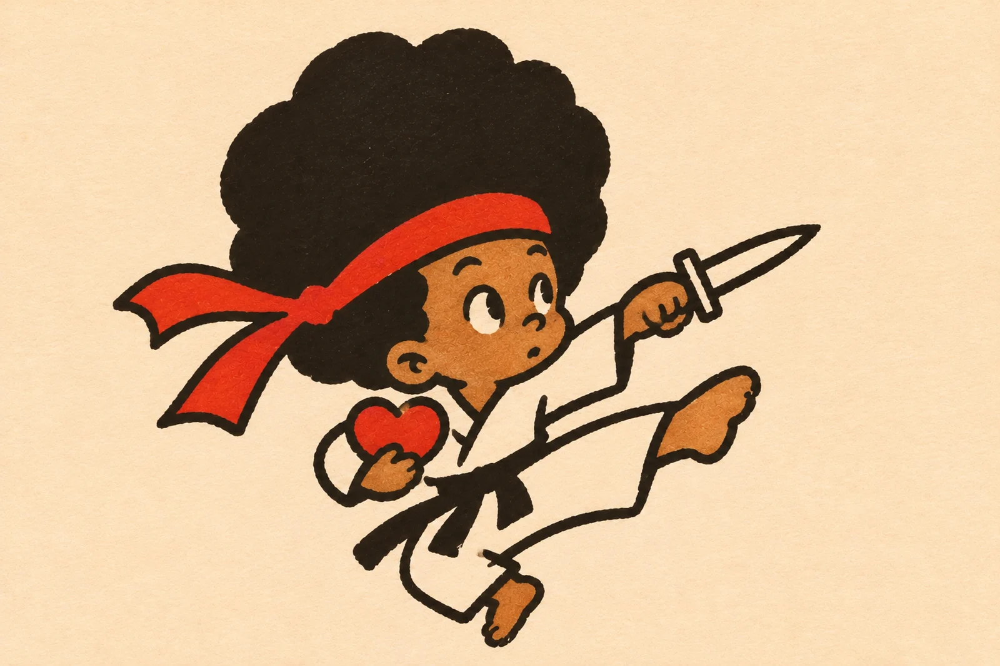
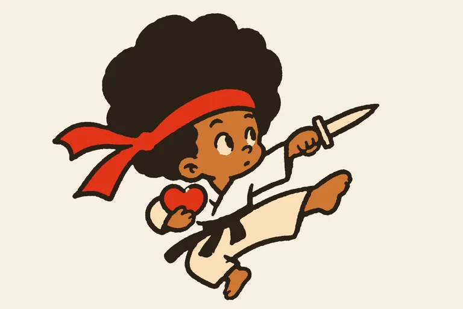
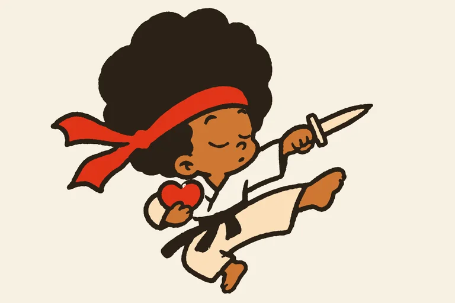
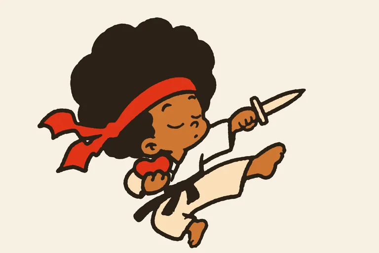
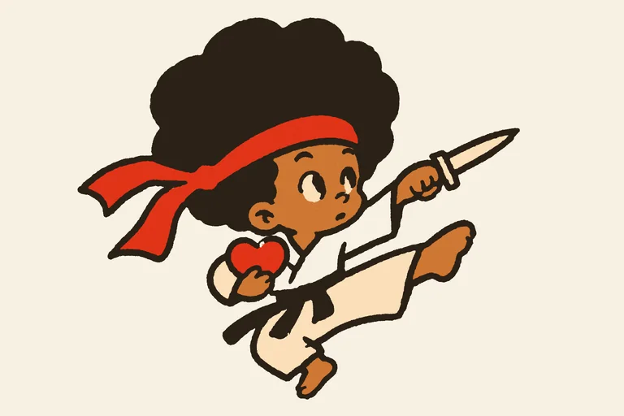

WorkKashus CulpepperCharacter file
Lil KC.
- For
- Kashus Culpepper
- Work
- Character · Illustration · Identity · Story
- Master
- Archived 16 November 2026
- Status
- In development
Brave enough to confront the world, gentle enough to protect his heart.

Fig. 1 · The master drawing. Every later drawing is measured against this one.Who he is.
Lil KC is a courageous, vulnerable and unmistakably adorable little boy: an enormous soft-edged afro, an oversized red bandanna, wide eyes, a tiny mouth, and irregular ink lines that give him his personality.
In the master drawing he charges toward danger with his dagger out, while holding a little red heart close and protected behind him. That contrast is the centre of the character.
What must never change.
He should be able to do almost anything without starting to look like someone else. These are the rules every new drawing is checked against.
- A massive, lumpy, irregular afro. Deliberately not round.
- A red bandanna, not a neat digital ribbon, with flying tails.
- Big, expressive, slightly asymmetrical eyes; a tiny mouth and a simple nose.
- An oversized head, a tiny body, exuberant mid-action poses.
- Hand-inked outlines that change weight, on paper with grain.
- Innocence, a little swagger, gentle courage. The heart matters.
- No slick 3D, no glossy surfaces, no stock cartoon eyes.
The Heart, in motion.
The first motion test: three seconds, thirty-six drawings at twelve a second. He floats up, blinks, looks down at his heart, squeezes it close with his eyes shut, then opens them, lifts his chin and reaches with the dagger.
This is a rough test, made to find the timing. It isn’t approved animation, and it will be redrawn.




Where he goes next.
He should be able to box, ride a horse, explore space, dance, fall, get back up, and protect his heart, without a redesign.
Original illustrations, a visual identity and the stories around him are in development with Kashus Culpepper.